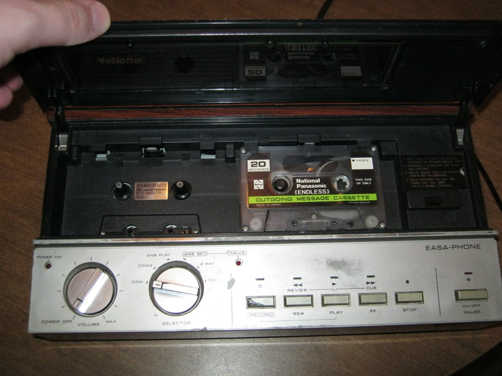

The Message That Would Not Come Back Around
The National Easa-Phone (c. 1979) stored your voice mail on endless-loop cassettes — sealed rings of tape that physically cannot rewind. To hear a message again you wait for the loop to come back around, tracking it on a mechanical counter. A literal case of the storage medium being the interface.

Every message machine in this museum hides the same secret, but only this one hides it inside the shape of the tape. We have kept the machine's memory threading through rooms full of stranger and stranger tokens — into a ring bearable around a finger, into a strip of printed ink you drag a wand across, into the magnetic discs that turned a dictated voice into a color-coded stack you could sort. The running assumption is always: the data hides in the object, and a machine reads it back for you.
The National Easa-Phone, Matsushita's consumer answering machine from around 1979, is the one member of that family that refuses to do the reading for you — not out of pride, but because its memory is a ring.
The tape that will not rewind
Here is the whole transaction, and notice how much of it is waiting. An ordinary answering machine of the era used a standard cassette you could rewind, the way you rewind anything, so that a message you missed on the first pass was always one button-press away. The Easa-Phone does not have that button, because it cannot. Its two tapes — one carrying the outgoing greeting, one carrying the incoming message bank — are endless loops, sealed continuous rings of magnetic tape running in a tiny oval until they return to their own start. There is no beginning and no end to the tape, which means there is no place to rewind to.
So to hear a message again, you let the loop come back around. You watch a mechanical counter tick up the length of tape you have traveled, you estimate, you wait, you take your best guess at where in the physical ring the voice you are looking for lives, and you let the thing play until you find it. The geometry of the storage decides how you navigate your own recorded memories. The medium is not the message — the medium is the navigation.
The two-channel machine made of plastic
What I love most about the Easa-Phone is how literally it models its data. Most of the answerphone lineage separated the outgoing greeting from the incoming messages the way software separates anything — by addressing, by registers, by invisible rules a chip agreed to follow. The Easa-Phone separates them with two pieces of tape. Channel boundaries are literal strips of plastic running in two little loops inside the same plastic box. Announcement and message bank are not two addresses in a memory map; they are two neighbors in physical space, each spinning on its own endless track.
It is the answerphone at the physical-token end of its own story, and that end has a frontier. Kazuo Hashimoto, the engineer who pioneered the endless-loop answerphone in the 1960s and later patented a digital answering-machine architecture, spent a career moving mechanicians from plastic geometry toward silicon memory. The Easa-Phone stops at the plastic. It is the descendant of Hashimoto's analog work and the calm, patient ancestor of the RAM-based machines of the late 1980s that would eventually delete the physical tape entirely. It marks the exact instant before the interface stopped being something you could hold.
The museum's medium-is-the-interface family
It belongs to the museum's smallest and strangest family, the artifacts where the medium is the interface — alongside 2-XL, the toy robot whose branching story ran on 8-track tracks you had to physically reach, and the Sony Typecorder, the word processor whose memory was a cassette you had to carry off the machine to move your words anywhere. All three refuse to let you pretend the data lives somewhere abstract. All three insist that how you get at your own content is decided by physics, not by software. The Easa-Phone is the most uncompromising of them, because in an 8-track you could at least rewind, and in a Typecorder you could at least fast-forward. Here you can only wait.
I do not know how many households ever grew to love the ritual of waiting for a loop to come back around, estimating against a ticking counter, pressing play at the wrong place and finding the same three seconds of your aunt's voice for the fortieth time. Probably fewer than the ones who grew to hate it. But that is exactly why the museum should keep it: it is the quietest and most honest illustration we own of a truth the rest of the world was busy covering up. Memory is never free. It is always shaped by whatever it happens to be stored in — and sometimes, if you are very lucky, the storage is honest enough to make you wait for your own past.